12 months. $20K equity. Access to $100K working capital. Real workshops, real investors, real growth, in Silicon Savannah, Nairobi.
Most companies in our Kuzana Investment Program double revenue within 12 months. We work with founders across agri-processing, retail, manufacturing, fintech, logistics, and more to build the next generation of category leaders in Kenya.
Cash alone doesn't build companies. Across Kenya's SME landscape, many founders raise capital but still struggle to scale. Without the right systems, guidance, and network, even well-funded businesses often stall.
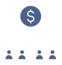
Many SMEs cannot deploy funding effectively, leading to fast cash burn instead of sustainable growth.
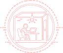
Without boards, mentors, or peer feedback, which slows decision-making and increases costly mistakes.
Pricing, systems, and retention prevent businesses from scaling and force founders to repeatedly rebuild fundamentals.
leaving strong businesses in sectors like agriculture, fintech, retail, and logistics unseen and underfunded due to weak networks.
Kuzana supports startup growth in Kenya by combining capital, structure, and long-term operational guidance. Unlike traditional funding-only models, Kuzana provides a $20,000 equity investment alongside access to up to $100,000 in working capital to help businesses scale effectively. The 12-month accelerator program in Nairobi focuses on building strong financial systems, improving operations, and strengthening sales and growth strategies.
Founders also receive hands-on mentorship, accounting support, and access to experienced advisors and peer learning within a selective cohort. By integrating funding with practical execution support, Kuzana helps Kenyan startups move beyond survival and build scalable, sustainable, category-leading businesses.
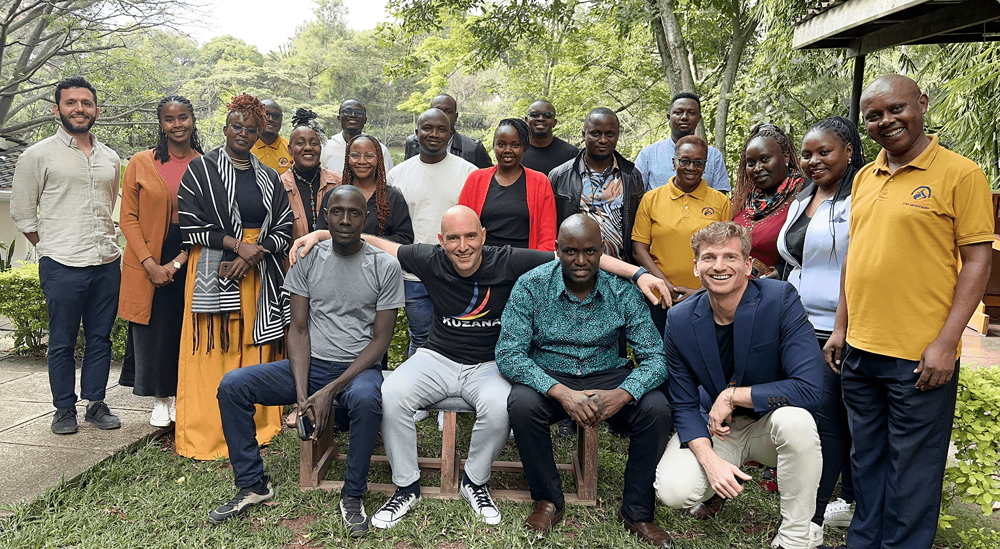
From application to long-term partnership, here is exactly what your journey with Kuzana looks like, step by step.

Kuzana is designed for serious Kenyan founders already generating revenue and ready to scale. We review businesses in key sectors with monthly revenue of Ksh 300K–10 M. Applications are assessed for model strength, ambition, and commitment, followed by calls and in-person meetings.
Kuzana is highly selective, accepting only 7 companies per cohort. This ensures deep support, accountability, and strong peer learning. We prioritise proven traction, scalable models, and committed founders focused on building serious, category-leading businesses in Kenya.
Selected founders join a 12-month hands-on accelerator held in Westlands, Nairobi. Sessions focus on fixing real business challenges, including financial systems, sales processes, operations, pricing, hiring, and growth strategy, with strong peer learning and practical execution support throughout.
Graduates receive a $20,000 equity investment and operational support, including accounting and tools. High-performing businesses may access up to $100,000 additional funding. Kuzana continues a long-term partnership with ongoing guidance, networks, and strategic support beyond capital.
Join the next cohort of serious Kenyan founders. If you're generating Ksh 300K–10M monthly and ready to build a category-leading business, we want to hear from you.
Joining the Kuzana Startup Accelerator gives founders access to funding, operational support, and hands-on guidance designed to help Kenyan businesses scale sustainably and become investor-ready.
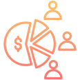

Every accepted company receives a $20,000 equity investment deployed quickly, with no long delays. Kuzana takes an equity stake of 8% to 33%, depending on your stage. This is real investment capital from experienced operators, not a grant or loan.
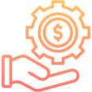

Beyond the initial investment, founders can access up to $100,000 in follow-on funding. This capital supports hiring, inventory, and expansion, helping businesses scale without the pressure of debt repayments.

Kuzana provides essential business tools like Zoho, Google Workspace, and other systems, fully set up and integrated. Founders avoid setup delays and focus immediately on execution, growth, and operations instead of administrative work.
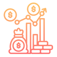

Each company receives 12 months of accounting support, including bookkeeping, financial cleanup, reporting systems, and investor-ready financial controls. This builds clarity, discipline, and trust in the business's financial foundation.

Founders get practical, hands-on support in pricing, sales systems, customer retention, and market expansion. Guidance is tailored to your specific sector, with real buyer introductions and actionable strategies, not generic startup advice.

Kuzana connects founders with experienced Kenyan operators who act as mentors and advisors. Combined with a tight cohort of 7 founders, this creates a powerful peer network for solving real business challenges faster.

Kuzana remains involved beyond the program with ongoing guidance, community access, and follow-on investment opportunities. The focus is long-term growth, building sustainable companies, and supporting founders well after initial acceleration.
Kuzana is deliberately selective. We do not work with every business; we work with the right ones. Here is exactly who this program is built for.
Kuzana is not for idea-stage or pre-revenue startups. It is designed for businesses with paying customers, steady sales, and a proven product. Your business should be 3 months to 5 years old and already operational with real market traction.
Eligible businesses generate between Ksh 400,000 and Ksh 20 million per month. This shows established demand and momentum, but also room to scale further with better systems, capital, and strategy. Outside this range, Kuzana may not be the right fit.
We support founders in high-impact sectors like agri-processing, retail, manufacturing, fintech, logistics, real estate, and construction. Businesses operating across multiple of these sectors are also strong candidates if they show scalability.
Founders must be based in Kenya and able to attend monthly in-person sessions in Westlands, Nairobi. The program is built around physical cohort learning, so consistent on-ground participation is essential.
We look for committed founders willing to build long-term, not chase quick exits. You should be open to feedback, ready to be challenged, and committed to the full program every Friday while aiming for large-scale growth.
Businesses should already have a basic structure, a working team, and some independent operations beyond the founder. Readiness to adopt proper accounting systems, such as Zoho, from day one is important, even with support.
Kuzana invests in founders, not just businesses. We look for integrity, collaboration, and long-term ambition. Ideal founders build sustainable companies and treat partnerships as long-term relationships rather than short-term transactions.
Most accelerators stop at funding. Kuzana goes further. We work alongside founders as long-term growth partners, not just investors.
Our focus is not on vanity metrics, flashy announcements, or “growth at any cost.” We believe in building sustainable, profitable businesses that can grow for the long term.
Practical business workshops
Real mentorship and strategic guidance
Accounting and operational support
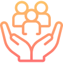
A strong community of ambitious founders
Everything is designed around execution, not theory. We help founders solve real business challenges and build systems that support long-term growth.
At Kuzana, the goal is not just to fund startups. It is to help build strong companies that can survive, scale, and succeed over time.
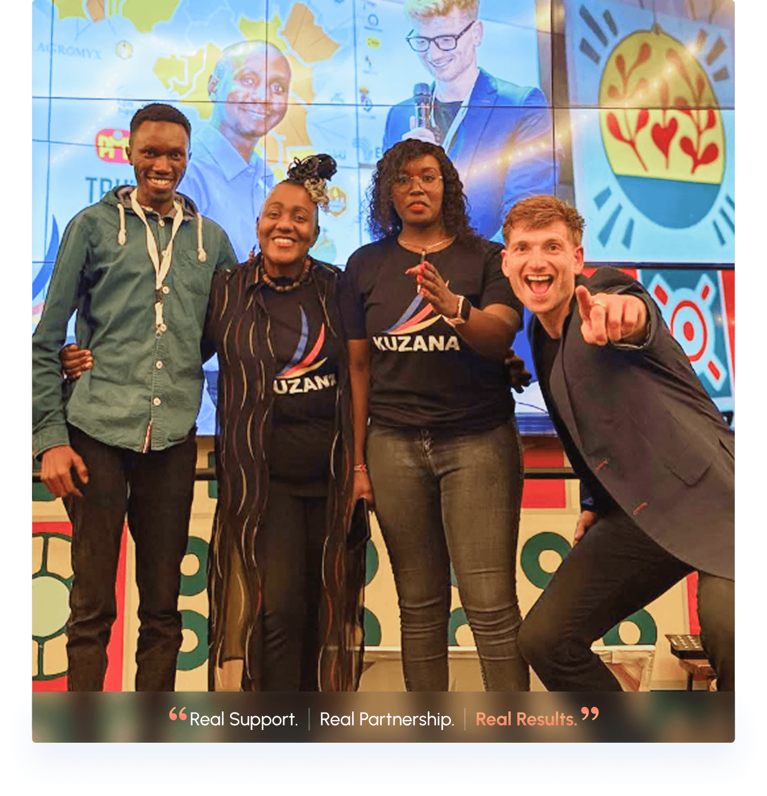
Kuzana works with founders building real, physical businesses across Kenya's most important sectors, the ones that feed, move, build, and finance the country.
From honey export and avocado oil to value-added food processing, if you are turning raw Kenyan produce into a scalable product, Kuzana understands your business better than any other investor in the room. We have backed agri-processors from the ground up and know exactly where the margins are won and lost.
From honey export and avocado oil to value-added food processing, if you are turning raw Kenyan produce into a scalable product, Kuzana understands your business better than any other investor in the room. We have backed agri-processors from the ground up and know exactly where the margins are won and lost.
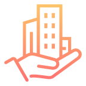
Builders and property developers with active project pipelines and recurring revenue are a strong fit for Kuzana. We help construction businesses build the financial systems, operational structure, and access to working capital needed to take on larger projects without losing control of cash flow.
Builders and property developers with active project pipelines and recurring revenue are a strong fit for Kuzana. We help construction businesses build the financial systems, operational structure, and access to working capital needed to take on larger projects without losing control of cash flow.
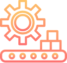
Production businesses with growing demand but operational complexity are exactly where Kuzana adds the most value. We help manufacturers tighten their processes, manage their cost of production, and scale output without losing margins, because in manufacturing, the difference between profit and loss often lies in the operations.
Production businesses with growing demand but operational complexity are exactly where Kuzana adds the most value. We help manufacturers tighten their processes, manage their cost of production, and scale output without losing margins, because in manufacturing, the difference between profit and loss often lies in the operations.
Kuzana backs fintech founders building financial tools and services for the realities of the Kenyan market, not Silicon Valley assumptions. If your product is solving a real money problem for real Kenyan customers and you are already seeing revenue, Kuzana is interested in what you are building.
Kuzana backs fintech founders building financial tools and services for the realities of the Kenyan market, not Silicon Valley assumptions. If your product is solving a real money problem for real Kenyan customers and you are already seeing revenue, Kuzana is interested in what you are building.
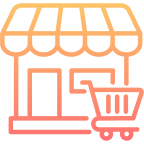
Scalable retail businesses with strong repeat purchases, a loyal customer base, and a model that can expand beyond a single location are a natural fit for the program. Kuzana helps retail founders build the sales systems, pricing strategy, and operational discipline that turn a good shop into a serious business.
Scalable retail businesses with strong repeat purchases, a loyal customer base, and a model that can expand beyond a single location are a natural fit for the program. Kuzana helps retail founders build the sales systems, pricing strategy, and operational discipline that turn a good shop into a serious business.
Last-mile delivery, freight, supply chain, and distribution businesses are the backbone of Kenya's economy and are chronically underfunded. Kuzana provides logistics founders with the working capital, operational structure, and strategic support needed to move from surviving each month to building a business that compounds.
Last-mile delivery, freight, supply chain, and distribution businesses are the backbone of Kenya's economy and are chronically underfunded. Kuzana provides logistics founders with the working capital, operational structure, and strategic support needed to move from surviving each month to building a business that compounds.
Kuzana typically takes between 8% and 33% equity, depending on the stage and structure of your business. The investment is $20,000 cash, and if your business grows, Kuzana can follow on with up to $100,000 in additional working capital.
It usually takes 4–8 weeks from your application to investment, depending on due diligence and final approvals.
No. We mainly want to understand your business and growth potential. Existing financial records help, but perfection isn't required.
No. We support sustainable growth at a pace that makes sense for your business, and public announcements are never mandatory.
After the program, you'll continue running your business independently while remaining part of our founder network for ongoing support.
Some sessions can be attended remotely, but certain activities may require in-person participation.
No. It's a guideline to help identify businesses at the right stage. Exceptional companies are always considered.
Only 7 companies are selected each cycle—if you're serious about scaling, this is where it happens. Join founders building Kenya's next category leaders, or stay connected with our growing community of operators, investors, and ambitious builders.
The application takes 10 minutes. The decision could change the next 10 years of your business.